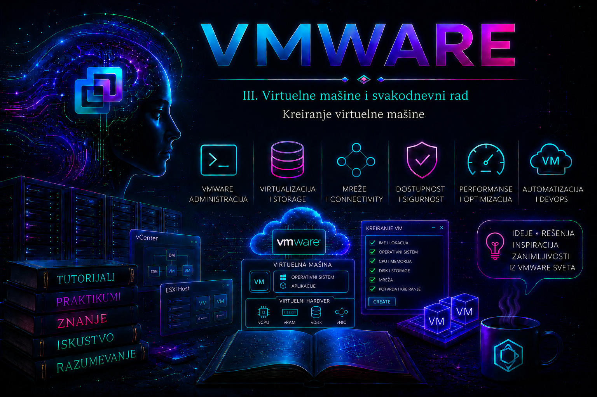

VMware

U prethodnoj lekciji virtuelna mašina je predstavljena kao izolovan skup virtuelnog hardvera, konfiguracionih datoteka i podataka gosta koji ESXi izvršava kao workload. Sada taj model pretvaramo u prvi konkretan administratorski rezultat: novu virtuelnu mašinu koja je pravilno smeštena u inventar, povezana sa odgovarajućim compute, storage i mrežnim resursima, pripremljena za instalaciju operativnog sistema i proverena pre predaje korisniku ili aplikacionom timu.
Čarobnjak New Virtual Machine može se završiti za nekoliko minuta, ali brzina klikanja nije merilo kvaliteta. Svaka odluka u njemu utiče na kompatibilnost, bezbednost, performanse, dostupnost, potrošnju kapaciteta i kasnije održavanje. Ispravan cilj nije „što više resursa”, već najmanja opravdana početna konfiguracija koja ispunjava dokumentovane zahteve i može kontrolisano da raste na osnovu merenja.
Ishod kreiranja i tok procesa
Kreiranje VM-a ne instalira automatski operativni sistem, osim kada se koristi template, klon ili automatizacija sa pripremljenom slikom i guest customization specifikacijom. Standardni postupak stvara inventory objekat, VM home prostor, konfiguracionu datoteku i virtuelne uređaje; zatim administrator priključuje instalacioni medijum, uključuje VM i kroz konzolu instalira gostujući sistem.
- zahtev se prevodi u tehničku specifikaciju i proveravaju se preduslovi;
- bira se inventory lokacija i compute resource;
- bira se datastore ili storage policy i kompatibilnost virtuelnog hardvera;
- navode se porodica i verzija guest OS-a;
- konfigurišu se CPU, memorija, disk, mreža, firmware i instalacioni medijum;
- vCenter šalje zadatak odgovarajućem ESXi hostu, a rezultat se beleži u Tasks and Events;
- VM se uključuje, instalira se OS, zatim VMware Tools ili odgovarajući open-vm-tools paket;
- validiraju se identitet, uređaji, mreža, vreme, bezbednost i operativna vidljivost.
Načini kreiranja virtuelne mašine
| Metod | Kada se koristi | Važno ograničenje |
|---|---|---|
| Nova prazna VM | Učenje, nestandardni OS, jednokratna ili posebna konfiguracija | Zahteva ručnu instalaciju i više kontrolnih koraka |
| Template | Standardizovano i ponovljivo izdavanje serverskih instanci | Template mora biti održavan, zakrpljen i pravilno generalizovan |
| Klon postojeće VM | Kontrolisana kopija poznatog workload-a ili laboratorija | Bez guest customization-a mogu se duplirati hostname, SID ili mrežni identitet |
| OVF/OVA uvoz | Virtuelni appliance ili prenosiva unapred zapakovana slika | Treba proveriti poreklo, potpis, kompatibilnost i podrazumevane naloge |
| Content Library | Centralna distribucija template-a, ISO slika i sadržaja između lokacija | Dostupnost zavisi od tipa biblioteke, sinhronizacije i prava pristupa |
| PowerCLI ili API | Masovno, proverljivo i ponovljivo kreiranje | Skripta mora proveravati ulaze, konflikte imena i rezultat svakog zadatka |
U produkciji je template najčešće bolji za rutinsko izdavanje servera, ali nova prazna VM ostaje osnovna veština: administrator kroz nju razume sve zavisnosti koje automatizacija kasnije mora eksplicitno da opiše.
Preduslovi i preflight kontrola
Pre otvaranja čarobnjaka treba postojati odobren zahtev: vlasnik i namena sistema, okruženje, kritičnost, zahtevani OS i verzija, očekivano opterećenje, period čuvanja, backup klasa, RPO/RTO, mrežni segment, DNS/IP plan i bezbednosna klasifikacija. Kreiranje „privremene” VM bez vlasnika i roka uklanjanja jedan je od najčešćih izvora nekontrolisanog rasta inventara.
- vCenter, izabrani hostovi i potrebni datastore-i su povezani i bez aktivnih kritičnih alarma;
- nalog ima najmanje privilegije potrebne za kreiranje VM-a, dodelu resursa, korišćenje datastore-a i povezivanje mreže;
- klaster ili host ima dovoljno CPU i memorijskog kapaciteta, uključujući HA rezervu;
- datastore ima dovoljno efektivnog slobodnog prostora i prihvatljivu latenciju;
- storage policy je poznata i kompatibilna, kada se koristi SPBM ili vSAN;
- port group je dostupna ciljnom hostu, a VLAN, MTU, DHCP ili statički IP plan potvrđeni;
- ISO potiče iz odobrenog izvora, checksum je proveren i licenciranje OS-a rešeno;
- izabrani guest OS podržavaju trenutna ESXi/vSphere verzija i planirana virtual hardware kompatibilnost;
- dogovoreni su firmware, Secure Boot i eventualni vTPM/enkripcija zahtevi;
- ime ne postoji u inventaru, DNS-u, IPAM-u, CMDB-u ili automatizacionom sistemu.
Imenovanje, folder i vlasništvo
Display name VM-a nije nužno isto što i hostname gosta, DNS zapis ili naziv direktorijuma na datastore-u. Standard treba da ih poveže bez pretpostavke da ih vSphere automatski sinhronizuje. Dobro ime je jedinstveno, stabilno i razumljivo, ali ne sadrži tajne, lične podatke ni podatke koji će brzo zastareti.
SRB-PROD-WEB-01
SRB-TEST-APP-02
LAB-RHEL-01
Primer šeme:
LOKACIJA-OKRUŽENJE-ULOGA-REDNI_BROJ
Generička imena kao Server1, VM2, NovaMasina i Test123 ne pokazuju vlasništvo ni svrhu. VM folder se koristi za organizaciju i delegiranje prava, ali nije resource pool: folder ne garantuje CPU ili memoriju. Beleške, tagovi i CMDB zapis treba da sadrže vlasnika, aplikaciju, okruženje, kritičnost, datum izdavanja i planirani životni ciklus.
Koraci kroz vSphere Client
Nazivi pojedinih polja mogu se neznatno razlikovati između vSphere izdanja, dozvola i konfiguracije okruženja, ali je logika ista. Na datacenter, folder, cluster, resource pool ili host objektu izaberite New Virtual Machine, zatim Create a new virtual machine.
- Select a name and folder: unesite standardizovano ime i izaberite VM folder. Odmah proverite da ne postoji kolizija.
- Select a compute resource: izaberite cluster, resource pool ili ESXi host. Čarobnjak prikazuje compatibility checks koje treba pročitati, ne samo preskočiti.
- Select storage: izaberite storage policy, datastore ili datastore cluster prema zahtevanoj klasi servisa, zaštiti i dostupnosti.
- Select compatibility: odaberite virtual hardware kompatibilnost prema najstarijem hostu na kojem VM mora moći da radi.
- Select a guest OS: precizno izaberite porodicu, distribuciju/verziju i arhitekturu gosta.
- Customize hardware: podesite CPU, memoriju, disk, kontrolere, port group, adapter, CD/DVD, firmware i druge potrebne opcije.
- Ready to complete: uporedite rezime sa odobrenim zahtevom i sačuvajte dokaz o važnim odlukama.
- Izaberite Finish, pratite zadatak u Recent Tasks i ne uključujte VM dok kreiranje nije uspešno završeno.
Izbor compute resource-a
Compute resource određuje gde VM može da se izvršava. Izbor samostalnog hosta je prihvatljiv u laboratoriji ili namenskom dizajnu, ali sam po sebi ne pruža automatski restart na drugom hostu. Izbor DRS klastera omogućava početni placement i kasnije balansiranje samo kada su odgovarajuće funkcije dostupne, licencirane, omogućene i pravilno konfigurisane. HA ne sprečava kvar VM-a; ona, uz ispunjene preduslove, može restartovati VM na preživelom hostu.
Pre placement-a proveravaju se host connection state, maintenance mode, EVC/CPU kompatibilnost, affinity/anti-affinity pravila, resource pool ograničenja, rezervacije, admission control i pristup mreži i storage-u. Zajednički datastore olakšava tradicionalni vMotion i HA, ali sama činjenica da je storage shared ne garantuje da su mreža, politika i dozvole ispravne.
Izbor datastore-a i storage politike
Datastore sadrži VM home i VMDK datoteke, dok storage policy opisuje zahtevane sposobnosti i pravila smeštaja. U SPBM/vSAN okruženju biranje bilo kog datastore-a sa najviše slobodnog prostora može prekršiti očekivanu dostupnost, performanse, enkripciju ili fault-domain politiku. Status Compatible znači da storage oglašava tražene sposobnosti; posle kreiranja treba proveriti i compliance.
Za disk se bira thin, thick lazy-zeroed ili thick eager-zeroed format kada ga odabrani datastore i postupak podržavaju. Thin štedi početno zauzeće, ali zahteva nadzor rasta. Thick rezerviše kapacitet unapred; eager-zeroed ima posebne zahteve i koristi se samo kada workload ili funkcija to opravdava. Detaljna analiza ostaje za lekcije o VMDK-u i provisioning-u.
Kompatibilnost virtuelnog hardvera
Virtual hardware version određuje skup virtuelnih uređaja i mogućnosti koje VM može koristiti. Najnovija verzija nije automatski najbolji izbor ako VM mora da radi ili se oporavlja na starijim ESXi hostovima. Kompatibilnost treba uskladiti sa najstarijim podržanim hostom u produkcionom, DR i restore okruženju. Kasnija nadogradnja virtual hardware-a je promena sa rizikom i nije isto što i instalacija VMware Tools-a.
Guest Operating System, firmware i bezbednosni uređaji
Izabrani guest OS profil pomaže vSphere-u da predloži odgovarajuće uređaje, kontrolere i podrazumevane vrednosti; on ne instalira OS i ne može nadoknaditi nepodržanu kombinaciju. Treba izabrati najprecizniju dostupnu podržanu vrednost za Windows Server, RHEL, Ubuntu, Debian, SUSE, Oracle Linux, FreeBSD ili drugi sistem, a kompatibilnost proveriti u zvaničnim interoperability matricama.
Za savremene sisteme često se koristi EFI/UEFI. Secure Boot zahteva EFI firmware, kompatibilan guest OS i odgovarajuću virtual hardware verziju; uključuje se dok je VM ugašena. vTPM obično uvodi zavisnost od key provider-a i enkripcije i ne treba ga dodavati bez dizajna upravljanja ključevima, backup-a i DR-a. Windows 11 i pojedine bezbednosne politike mogu zahtevati UEFI, Secure Boot i TPM, ali tačne zahteve treba proveriti za konkretno izdanje gosta.
Početno dimenzionisanje CPU-a i memorije
Broj vCPU i RAM određuju se prema dokumentovanim minimumima OS-a, profilu aplikacije, očekivanom rastu i baznoj liniji sličnih workload-a. Vrednosti poput 2 vCPU i 4 GB za malu Linux laboratoriju ili 2–4 vCPU i 4–8 GB za osnovni Windows server mogu biti početne pretpostavke, ali nisu univerzalna produkciona preporuka.
Prevelika VM može čekati duže da scheduler obezbedi istovremeno CPU vreme za vCPU-ove, povećati NUMA posledice i potrošiti HA kapacitet. Previše memorije smanjuje raspoloživ kapacitet klastera; premalo izaziva paging ili pritisak u gostu. Reservations, limits, shares, cores per socket, CPU Hot Add i Memory Hot Add menjaju ponašanje i uvode dodatne posledice, pa se ne uključuju bez zahteva. Posle puštanja u rad dimenzionisanje se potvrđuje metrikama, a ne utiskom.
Virtuelni disk i kontroler
Za sistemski disk treba planirati ne samo instalacioni minimum nego i zakrpe, logove, page/swap prostor, alatke za upravljanje i privremeni rast. Podaci aplikacije, baze i intenzivni logovi često se odvajaju na posebne VMDK-ove radi upravljanja, backup politike i performansi, ali broj diskova sam po sebi ne stvara dodatne fizičke IOPS ako svi dele isto usko grlo.
Preporučeni SCSI kontroler zavisi od gosta i workload-a. VMware Paravirtual SCSI može biti dobar za I/O-intenzivne podržane sisteme, dok podrazumevani kontroler često pojednostavljuje instalaciju. Ako instalater ne vidi disk, prvi osumnjičeni su podrška/drajver kontrolera, ISO integritet i način povezivanja uređaja — ne treba nasumično menjati storage konfiguraciju.
Mrežna konfiguracija
Virtuelni mrežni adapter se vezuje za standardnu ili distribuiranu port group. Administrator proverava da li je mreža namenjena datom sigurnosnom domenu, da li je dostupna ciljnom hostu i da li Connect at power on treba da bude uključeno. Pogrešna port group može izložiti sistem produkcionoj mreži pre hardening-a ili izazvati konflikt adrese.
VMXNET3 je uobičajeni izbor za podržane moderne goste zbog performansi i funkcija, ali zahteva odgovarajući drajver, najčešće kroz VMware Tools ili distribucijski open-vm-tools paket. E1000E se koristi samo kada kompatibilnost ili instalaciona faza to opravdavaju. Tip adaptera ne popravlja pogrešan VLAN, uplink, firewall ili guest konfiguraciju.
Povezivanje ISO slike i instalacija OS-a
Za pouzdan serverski postupak prednost imaju kontrolisani ISO na datastore-u ili u Content Library-ju. Povezivanje ISO-a sa administratorskog računara zavisi od aktivne klijentske sesije i nije dobro za dugotrajne ili automatizovane instalacije. Pre upotrebe se proverava checksum prema izdavaču OS-a i ograničava pravo izmene centralnog repozitorijuma slika.
- u Edit Settings izaberite CD/DVD uređaj i odobrenu ISO sliku;
- uključite Connected i Connect at power on samo za instalaciju;
- uključite VM i otvorite konzolu; po potrebi jednokratno izaberite virtual CD/DVD kao boot uređaj;
- instalirajte OS, particionišite disk prema standardu i konfigurišite identitet, vreme i mrežu;
- instalirajte zakrpe i odgovarajući VMware Tools/open-vm-tools paket;
- isključite automatsko povezivanje ISO-a i odvojite medijum da naredni restart ne uđe ponovo u instalaciju.
Read-only provere na ESXi hostu
Sledeće komande se izvršavaju u ESXi Shell-u ili preko SSH-a nalogom sa odgovarajućim administratorskim pravima. One čitaju stanje i ne kreiraju VM. SSH treba uključiti samo prema politici, vremenski ograničiti i zatvoriti posle rada.
# Registrovane VM na hostu; VMID je potreban za pojedine vim-cmd provere
vim-cmd vmsvc/getallvms
# Samo uključene VM i njihov world ID
esxcli vm process list
# Montirani datastore-i, tip i kapacitet
esxcli storage filesystem list
# Fizički NIC-ovi hosta; ovo ne prikazuje VM port group konfiguraciju
esxcli network nic list
# VMkernel adapteri hosta; nisu isto što i virtuelni NIC gosta
esxcli network ip interface list
Očekuje se da nova VM bude prikazana u vim-cmd vmsvc/getallvms sa pravilnim imenom, datastore putanjom i guest oznakom. esxcli vm process list je neće prikazati dok nije uključena. Ove komande ne dokazuju da guest mreža radi; za to se kombinuju vSphere podaci, guest provere i mrežna dijagnostika.
PowerCLI: proverljivo kreiranje i validacija
Sledeći laboratorijski primer izvršava se u PowerShell-u sa instaliranim aktuelnim VMware/VCF PowerCLI modulima. Get-* komande su read-only; New-VM, Set-CDDrive, Start-VM i Remove-VM menjaju stanje. Primer koristi eksplicitno razrešene objekte i prekida rad ako ime već postoji.
$ErrorActionPreference = 'Stop'
$serverName = 'vcsa.lab.local'
$vmName = 'LAB-RHEL-01'
$clusterName = 'LAB-CLUSTER'
$datastoreName = 'LAB-DATASTORE-01'
$networkName = 'LAB-PG-SERVER'
Connect-VIServer -Server $serverName
if (Get-VM -Name $vmName -ErrorAction SilentlyContinue) {
throw "VM sa imenom $vmName već postoji."
}
$cluster = Get-Cluster -Name $clusterName
$vmHost = Get-VMHost -Location $cluster |
Where-Object ConnectionState -eq 'Connected' |
Sort-Object CpuUsageMhz |
Select-Object -First 1
$datastore = Get-Datastore -Name $datastoreName
$network = Get-VirtualPortGroup -Name $networkName
if ($datastore.FreeSpaceGB -lt 80) {
throw "Nema dogovorenog minimalnog slobodnog prostora."
}
$vm = New-VM -Name $vmName `
-VMHost $vmHost `
-Datastore $datastore `
-NumCpu 2 `
-MemoryGB 4 `
-DiskGB 40 `
-DiskStorageFormat Thin `
-NetworkName $network.Name `
-GuestId 'rhel9_64Guest' `
-Notes 'Owner: IT Lab; Purpose: Lesson 12; Expiry: 2026-08-31'
$vm | Get-NetworkAdapter | Set-NetworkAdapter `
-Type Vmxnet3 -StartConnected:$false -Confirm:$false
$vm | Select-Object Name, PowerState, NumCpu, MemoryGB, VMHost
$vm | Get-HardDisk | Select-Object Name, CapacityGB, StorageFormat, Filename
$vm | Get-NetworkAdapter | Select-Object Name, Type, NetworkName, ConnectionState
Tačan GuestId i dostupni tipovi uređaja zavise od verzije platforme i PowerCLI-ja; ne prepisuju se naslepo iz primera. U produkciji se host placement prepušta pravilno konfigurisanom klasteru/DRS-u ili odobrenoj politici, umesto jednostavnog sortiranja po trenutnoj CPU potrošnji. Lozinke se ne upisuju u skriptu; koriste se bezbedan credential store, interaktivna autentikacija ili odobreni secrets sistem.
Ako je ISO na datastore-u, uređaj se može povezati zasebnom state-changing komandom. Putanja mora biti stvarna i dostupna hostu.
$isoPath = '[LAB-DATASTORE-01] iso/rhel-9.x-x86_64-dvd.iso'
$cd = Get-CDDrive -VM $vm
$cd | Set-CDDrive -IsoPath $isoPath `
-StartConnected:$true `
-Confirm:$false
Get-CDDrive -VM $vm |
Select-Object Name, IsoPath, ConnectionStateNew-VM nije idempotentno.
Praktikum: od zahteva do validirane nove VM
Vežba 1 – Preflight i dokumentovanje odluke
Cilj i kontekst: pripremiti laboratorijsku RHEL VM za aplikacioni tim bez ugrožavanja produkcione mreže. Topologija obuhvata jedan vCenter, klaster sa najmanje jednim povezanim ESXi hostom, datastore LAB-DATASTORE-01, izolovanu port group LAB-PG-SERVER i odobren ISO.
Preduslovi: pravo kreiranja VM-a i korišćenja navedenih resursa, potvrđen checksum ISO-a, 2 vCPU, 4 GB RAM, thin sistemski disk od 40 GB i jedinstveno ime LAB-RHEL-01. Rizik je nizak dok se rade samo provere; nijedan resurs još nije promenjen.
- U vSphere Client-u proverite Monitor > Issues and Alarms na klasteru, hostu i datastore-u.
- Proverite da host nije u maintenance mode-u i da vidi datastore i port group.
- Proverite slobodan prostor, poslednju latenciju i eventualne storage alarme.
- Pretražite inventory za tačno ime VM-a i proverite DNS/IPAM/CMDB prema laboratorijskim mogućnostima.
- Zabeležite vlasnika, svrhu, datum uklanjanja i kriterijum uspeha.
Očekivani rezultat i validacija: nema blokirajućih alarma, svi resursi su dostupni, ime je slobodno i postoji pisana specifikacija. Ako bilo koji uslov nije ispunjen, kriterijum završetka nije dostignut i VM se ne kreira.
Vežba 2 – Kreiranje kroz vSphere Client
Rizik: srednji, jer postupak alocira storage i kreira inventory objekat. Port group izaberite pažljivo, a mrežni adapter ostavite odspojenim do završetka osnovnog hardening-a.
- Pokrenite New Virtual Machine > Create a new virtual machine.
- Unesite
LAB-RHEL-01, izaberite laboratorijski VM folder i klaster/resource pool. - Izaberite odobrenu storage policy i
LAB-DATASTORE-01. - Izaberite kompatibilnost koja radi na svim hostovima laboratorije i odgovarajući RHEL 9 64-bit guest profil.
- Podesite 2 vCPU, 4 GB RAM i thin disk od 40 GB.
- Izaberite
LAB-PG-SERVER, VMXNET3 i isključite Connect at power on. - Povežite provereni ISO; izaberite EFI/Secure Boot samo ako ih ISO i laboratorijski cilj podržavaju.
- U rezimeu uporedite svaku vrednost sa zahtevom, završite zadatak i pratite Recent Tasks.
Očekivani rezultat: zadatak Create virtual machine završava statusom Completed, VM je Powered Off, nema configuration issue poruke, a Summary i Edit Settings pokazuju odobrene resurse. Dodatno proverite Events i datastore lokaciju.
Vežba 3 – Instalacija, prvo uključivanje i operativna validacija
- Proverite da je ISO povezan i uključite VM.
- Otvorite konzolu i potvrdite da je pokrenut odgovarajući instalater.
- Instalirajte OS prema laboratorijskom standardu; ne koristite produkcione tajne.
- Primeni zakrpe, VMware Tools/open-vm-tools, vremensku sinhronizaciju i osnovni hardening.
- Povežite mrežni adapter tek kada su hostname i IP konfiguracija spremni.
- Odvojite ISO i uklonite Connect at power on, pa kontrolisano restartujte gosta.
Validacija: VM se podiže sa VMDK-a, vSphere prikazuje očekivan guest OS i Tools status, konzola je dostupna, guest vidi CPU, RAM, disk i mrežni adapter, vreme je ispravno, nema novog kritičnog alarma, DNS i dozvoljena mrežna komunikacija rade. Kriterijum završetka je ponovljiv restart bez ISO-a i dokumentovan CMDB/inventory zapis.
Vežba 4 – Troubleshooting: VM se ne pokreće sa ISO-a
Simptom: konzola prikazuje „No operating system found”, EFI shell ili prelazi na prazan disk. Obim: utvrdite da li problem pogađa samo ovu VM, isti ISO ili sve VM na hostu. Posledica: instalacija ne može početi, ali podaci još ne postoje pa je rizik korekcije mali.
- Bez promene stanja pregledajte Recent Tasks, Events, konfiguraciju CD/DVD uređaja, ISO putanju i Connected/Connect at power on.
- Proverite da li host vidi datastore/Content Library sadržaj i da li je ISO checksum ispravan.
- Proverite firmware i boot order; ne menjajte BIOS/EFI nasumično ako je OS već instaliran.
- Postavite hipotezu: medijum nije povezan, ISO nije bootabilan/oštećen, host nema pristup ili firmware ne odgovara slici.
- Ugašenoj VM bezbedno ponovo povežite potvrđen ISO i koristite jednokratni boot izbor; zatim validirajte pojavu instalatera.
Privremeno rešenje: ručno povezivanje potvrđenog ISO-a. Trajna mera: centralni odobreni repozitorijum, checksum evidencija i automatizovana kontrola uređaja. Ako korekcija ne uspe, vratite prvobitne firmware i CD/DVD postavke i sačuvajte Events/logove pre eskalacije.
Vežba 5 – Troubleshooting: kreiranje ili power-on zadatak ne uspeva
Prvo zabeležite tačno vreme, task ID/opID ako je prikazan, korisnika, objekat, poruku greške i poslednju promenu. Ne ponavljajte zadatak mnogo puta: možete napraviti delimične objekte ili prikriti prvobitni dokaz.
| Simptom | Najpre proveriti | Bezbedna korekcija |
|---|---|---|
| Insufficient disk space | Datastore free space, thin rast, snapshot/backup aktivnost, storage alarm | Izabrati odobren datastore ili osloboditi kapacitet kroz change postupak |
| Permission denied | Efektivne privilegije na folderu, resource pool-u, datastore-u i mreži | Dodeliti najmanje potrebnu ulogu na pravom objektu; ne koristiti trajno administrator nalog |
| Incompatible device/host | Hardware version, guest profil, CPU/EVC, uređaj, dostupnost port group-e | Uskladiti konfiguraciju sa zvaničnom matricom i najstarijim ciljnim hostom |
| VM postoji, ali power-on ne uspeva | Events, HA/admission control, zaključavanje datoteka, storage i host stanje | Otkloniti potvrđen uzrok; ne brisati lock datoteke niti ubijati world bez eskalacije |
| Guest nema mrežu | Connected status, port group/VLAN, adapter/drajver, guest IP/firewall | Ispraviti dokazano pogrešan sloj; ne menjati VLAN i guest firewall istovremeno |
Za vCenter operacije primarni log je /var/log/vmware/vpxd/vpxd.log na VCSA. Na ESXi hostu relevantni su /var/log/hostd.log za host management operacije, /var/log/vpxa.log za komunikaciju sa vCenter-om i /var/log/vmkernel.log za VMkernel, storage, uređaje i power-on događaje. U direktorijumu VM-a, vmware.log beleži konkretno pokretanje i rad te VM. Filtriranje se radi po uskom vremenskom opsegu, imenu VM-a i opID/task korelaciji; logovi se ne tumače izolovano od Events i alarms.
# Read-only laboratorijska korelacija na ESXi hostu
grep -i 'LAB-RHEL-01' /var/log/hostd.log | tail -n 50
grep -i 'LAB-RHEL-01' /var/log/vpxa.log | tail -n 50
grep -iE 'fail|error|no space|lock' /var/log/vmkernel.log | tail -n 100Privremeno zaobilazno rešenje, na primer drugi kompatibilni host ili datastore, primenjuje se samo ako ne krši politiku i nakon prikupljanja dokaza. Trajna korektivna mera uklanja osnovni uzrok: kapacitet, pogrešnu ulogu, nedoslednu mrežu, zastarelu matricu kompatibilnosti ili lošu automatizaciju. Posle oporavka ponavljaju se preflight i post-check, a nalaz se dokumentuje.
Vežba 6 – Rollback i povratak laboratorije
Ako je VM samo laboratorijski objekat bez vrednih podataka, rollback je njeno kontrolisano uklanjanje. Pre toga proverite ime, folder, vlasnika, power state, diskove i eventualne zavisnosti. Remove from Inventory ne briše datastore datoteke, dok Delete from Disk uklanja VM i njene pripadajuće datoteke i predstavlja destruktivnu operaciju.
# LAB ONLY — prvo read-only dokaz, zatim destruktivno uklanjanje uz potvrdu
$target = Get-VM -Name 'LAB-RHEL-01'
$target | Select-Object Name, PowerState, Folder, VMHost
$target | Get-HardDisk | Select-Object Name, Filename, CapacityGB
# Izvršiti samo kada je identitet potvrđen i nema podataka za čuvanje.
$target | Remove-VM -DeletePermanently -Confirm:$trueAko VM sadrži podatke ili je već predata vlasniku, brisanje nije rollback: potreban je odobren recovery/change postupak. Kriterijum završetka laboratorije je da VM više ne postoji u inventaru, da nema zaostalog direktorijuma ili rezervacije kapaciteta i da je evidencija zatvorena.
Administratorske prakse
- Kreirajte VM samo iz odobrenog zahteva sa vlasnikom, svrhom, klasifikacijom i rokom.
- Koristite standardizovana imena, foldere, tagove, beleške i CMDB evidenciju.
- Primenjujte least privilege i razdvajajte pravo kreiranja od prava na mrežu, storage i enkripciju kada organizacija to zahteva.
- Dimenzionišite konzervativno, merite realnu potrošnju i rightsizing sprovodite kroz kontrolisanu promenu.
- Birajte kompatibilnost prema celom životnom ciklusu: produkcija, maintenance, migracija, backup restore i DR.
- Koristite odobrene, proverene ISO slike i nakon instalacije ih odvojite.
- Ne povezujte nezakrpljen sistem na osetljivu mrežu; prvo identitet, hardening i zakrpe.
- Posmatrajte Tasks, Events, alarms i logove kao dokaz, a ne samo poruku čarobnjaka.
- Automatizaciju gradite sa validacijom ulaza, kontrolom grešaka, audit tragom i bez tajni u izvornom kodu.
- Predaju VM-a završite tek kada je restart testiran, monitoring aktivan, backup obuhvat potvrđen i vlasništvo evidentirano.
Završna kontrolna tačka
- Mogu da prevedem zahtev za server u proverljivu specifikaciju VM-a.
- Umim da proverim compute, storage, mrežne, kompatibilnosne i bezbednosne preduslove pre promene.
- Razlikujem inventory folder, resource pool, cluster, host, datastore i storage policy.
- Umim da objasnim posledice izbora guest profila, hardware compatibility, firmware-a i Secure Boot-a.
- Mogu bezbedno da kreiram praznu VM kroz vSphere Client i osnovni PowerCLI postupak.
- Umim da povežem provereni ISO, instaliram OS i sprečim ponovno podizanje sa instalacionog medijuma.
- Mogu da validiram uređaje, mrežu, Tools status, događaje, alarme i restart.
- Razlikujem read-only proveru od state-changing i destruktivne komande.
- Umim da dijagnostikujem neuspešno kreiranje ili power-on od dokaza ka uzroku, bez nasumičnih promena.
- Znam razliku između uklanjanja iz inventory-ja i trajnog brisanja sa datastore-a.
Zaključak
Kreiranje virtuelne mašine jeste prvi praktičan korak VMware administratora, ali je istovremeno mala infrastrukturna promena sa punim životnim ciklusom. Kvalitetna VM nije ona koja se samo uključila, već ona čije su ime, vlasništvo, placement, kapacitet, storage politika, mrežna izolacija, kompatibilnost i bezbednosne postavke opravdane zahtevom i potvrđene dokazima.
Administrator zato najpre proverava, zatim menja stanje, prati zadatak, instalira i štiti gost, validira rezultat i dokumentuje predaju ili rollback. Ovakav način rada priprema čitaoca za naredne lekcije: preciznije upravljanje virtuelnim hardverom, pouzdanu integraciju gosta kroz VMware Tools i standardizovano izdavanje VM-ova pomoću template-a i kloniranja.